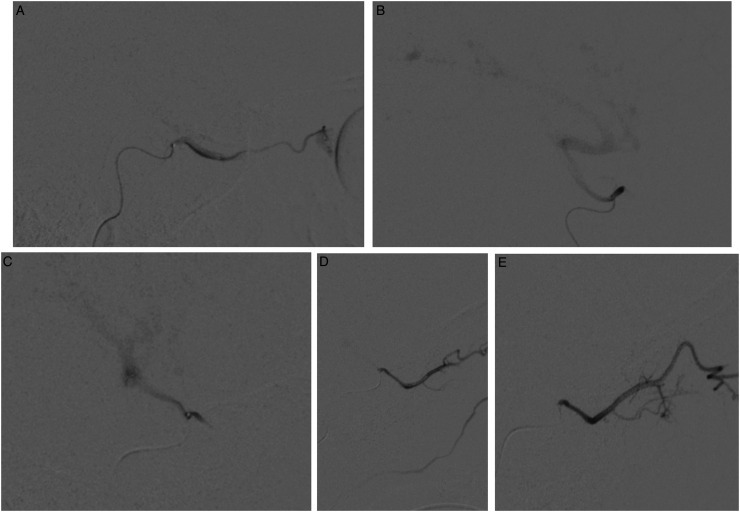
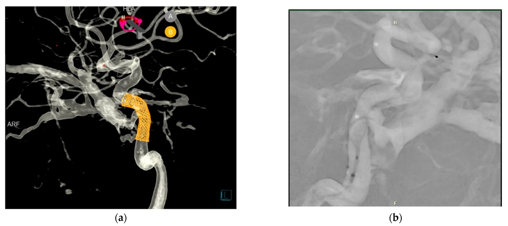
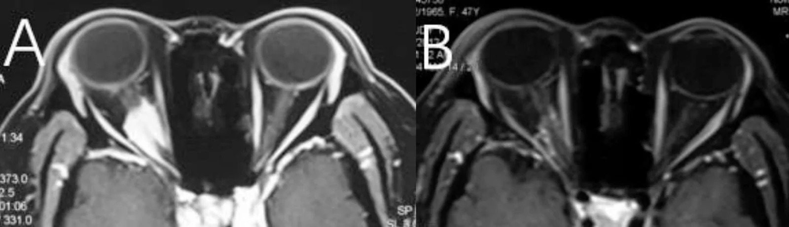
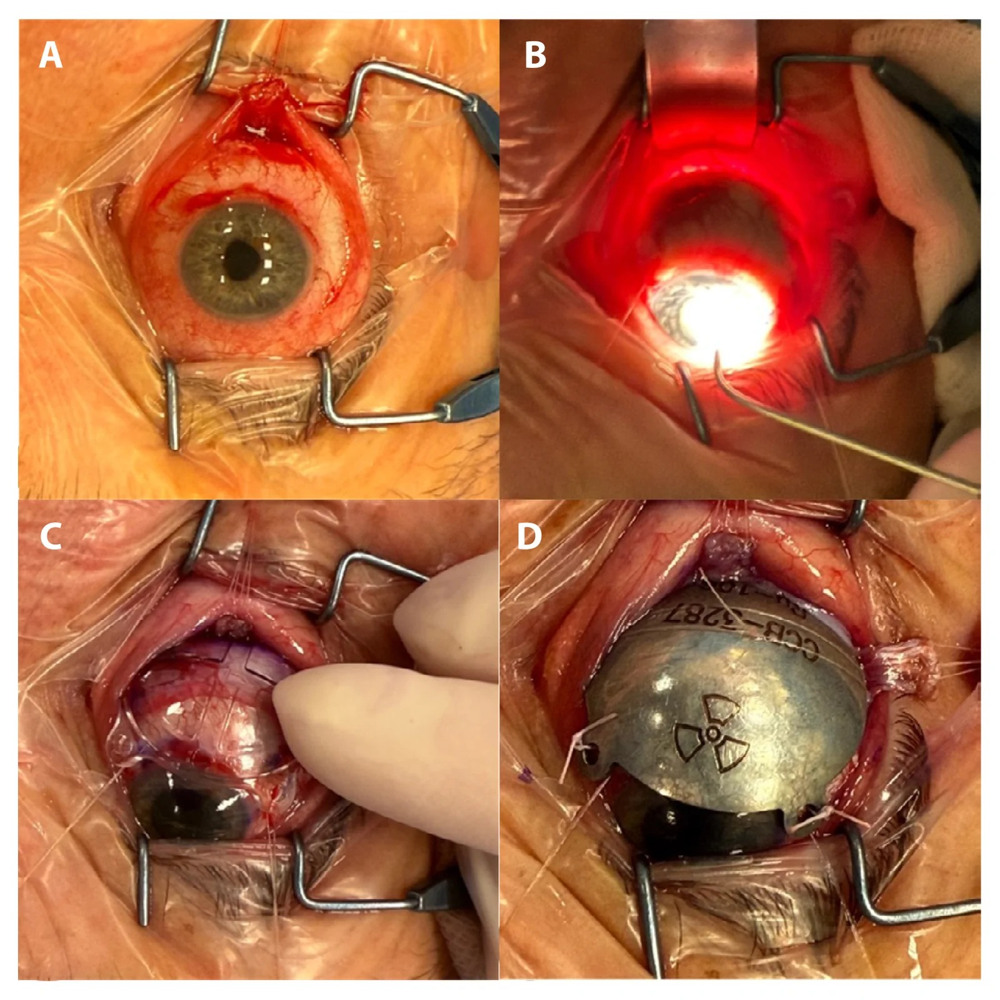

460 — Can thiệp mạch mắt + xạ trị / Intervention & Radiotherapy imaging
Tags: pattern:can-thiep-mat vung:mat
Mức chắc chắn (certainty): tổng hợp y văn (literature synthesis) — nhóm tự biên từ y văn mở, chưa gắn ca nguyên văn đơn lẻ.
1. Tổng quan — nút mạch + xạ lập thể giữ thị lực
- Nút mạch CCF: DSA + coil/bóng qua ĐM cảnh trong, giữ dòng chính — hết tiếng thổi + xẹp SOV (bài 423).
- Xạ lập thể ONSM: SRS 25 Gy/5 phân liều (mẫu), kiểm soát ~96–100%, giữ thị lực còn lại (bài 431).
- Xạ u hắc mạc: proton áp sát + siêu âm/OCT theo dõi (teo u + biến chứng khô mắt/đục thủy tinh thể).
- TẠI SAO hình ảnh dẫn đường sống còn: DSA thấy dòng fistula realtime; MRI đo thể tích u trước/sau xạ (giảm 44% mẫu ONSM).
2. Gamut can thiệp theo bệnh
- CCF dòng cao: nút mạch cấp cứu (coil) — DSA + giữ ĐM cảnh.
- ONSM tiến triển: SRS 25 Gy/5 — MRI thể tích + thị lực.
- U hắc mạc: proton/brachytherapy — siêu âm/OCT + di căn gan.
- RB tiến triển: hóa chất nội động mạch mắt (IAC) — DSA + MRI đáp ứng.
3. Bảng chỉ định – theo dõi (ma trận đối chiếu)
| Can thiệp | Chỉ định hình ảnh | Liều/mốc | Theo dõi hình ảnh | Chốt vào (rule-in) | Chốt loại (rule-out) |
|---|---|---|---|---|---|
| Nút CCF (coil/flow-diverter) | SOV giãn + đổ đầy sớm | Coil/stent đến hết shunt | Hết tiếng thổi + xẹp SOV | Tiếng thổi + SOV giãn + đổ đầy sớm | Không tiếng thổi + khuyết thuốc trong xoang → huyết khối (không nút) |
| SRS ONSM | U quanh TK + thị lực còn | 25 Gy/5 | Thể tích + thị lực 6 tháng | U ngấm dọc bao TK ("tram-track") | Tổn thương lan ra mô mềm ngoài bao → u/viêm khác |
| Proton/plaque u hắc mạc | Khối + chưa di căn | Áp sát u (plaque ruthenium) | Siêu âm/OCT + PET gan | Khối hắc mạc dày ≥ 2 mm, T1 sáng, tỏa hình nấm | Tổn thương phẳng, không dày → nevus hắc mạc |
| IAC (RB) | RB tiến triển, một bên | Melphalan qua ĐM mắt | MRI đáp ứng + mắt còn lại | Đảo chiều dòng ĐM mắt khi bơm chọn lọc | Không chọn được ĐM mắt → đường bàng hệ (IMAX) |

Hóa chất nội động mạch (IAC) cho RB: DSA cho thấy dòng ĐM mắt xuôi chiều (A) và đảo chiều, reflux vào ĐM cảnh trong (B) — hướng dòng quyết định thuốc có tới được mắt hay không. Nguồn: Feldman M et al., Interv Neuroradiol 2025, PMC12475354 Fig. 2, CC BY-NC 4.0.
*CCF chấn thương hai bên: (a) DSA 3D + mô hình hóa flow-diversion, giãn tĩnh mạch mắt trên (SOV); (b) stent flow-diverter đặt tại lỗ rò. Nguồn: Placek O et al., Reports (MDPI) 2026, PMC13510772 Fig. 2, CC BY 4.0.*4. Protocol
- Định hướng theo can thiệp — ảnh đối chiếu:
- ONSM trước/sau xạ lập thể: MRI T1 cản quang lát mỏng cho thấy khối ngấm quanh thần kinh thị thoái triển sau xạ (đối chiếu trước – 6 tháng).
- U hắc mạc — brachytherapy (plaque ruthenium): đặt plaque đúng nền u (tháo chèn cơ → đánh dấu nền u qua xuyên sáng → plaque giả kiểm tra vị trí) là điều kiện để đủ liều vào u mà chừa thần kinh thị.

ONSM (meningioma bao thần kinh thị): (A) MRI T1 cản quang trước xạ — khối ngấm quanh thần kinh thị phải; (B) 6 tháng sau xạ lập thể — u thoái triển. Mục tiêu SRS là kiểm soát u + giữ thị lực còn lại. Nguồn: Yang Y et al., Radiat Oncol 2026, PMC13555848 Fig. 3, CC BY-NC-ND 4.0 (giữ nguyên bản).
Brachytherapy u hắc mạc: (A) tháo chèn cơ, (B) đánh dấu nền u trên củng mạc qua xuyên sáng, (C) đặt plaque giả để kiểm tra vị trí trước khi cố định. Nguồn: Deja A et al., Rep Pract Oncol Radiother 2026, PMC13544059 Fig. 2, CC BY-NC-ND 4.0 (giữ nguyên bản).- DSA: bản đồ fistula + test tắc bóng (chịu được mới nút ĐM chính).
- MRI lập kế hoạch SRS: T1 cản quang lát mỏng + giới hạn TK/giao thoa/thể thủy tinh.
- Sau can thiệp: MRI + thị lực + nhãn áp định kỳ (biến chứng muộn).
5. Cạm bẫy
- Nút nhầm ĐM nuôi TK thị → mù — test tắc + DSA siêu chọn lọc.
- Xạ quá liều thể thủy tinh → đục sớm — giới hạn liều + che chắn.
- Tái phát sau nút/xạ — DSA/MRI định kỳ, đừng coi khỏi hẳn.
6. Tự lượng giá — Blind Quiz
Ca 1 — Bé trai 2 tuổi, RB một bên, được hóa chất nội động mạch (IAC). Nhìn DSA, mô tả hướng dòng:
- Hỏi: panel nào dòng xuôi chiều, panel nào đảo chiều? Vì sao hướng dòng quyết định hiệu quả?
Bấm để hiện đáp án
- (A) dòng ĐM mắt xuôi chiều (thuốc đi vào mắt); (B) đảo chiều, reflux vào ĐM cảnh trong — khi đó thuốc có thể không tới mắt đủ.
- Chốt: phải bơm chọn lọc và xác nhận hướng dòng; nếu không chọn được ĐM mắt → đường bàng hệ (IMAX). Theo dõi MRI đáp ứng + mắt còn lại.
- Nguồn ảnh: Feldman M et al., Interv Neuroradiol 2025, PMC12475354 Fig. 2, CC BY-NC 4.0.
Ca 2 — Bệnh nhân CCF chấn thương hai bên: đọc DSA và cho biết "chốt vào" để nút mạch:
- Hỏi: dấu hiệu nào chốt CCF? Chốt loại CCF (nghĩ huyết khối) là gì? Can thiệp gì?
Bấm để hiện đáp án
- (a) DSA 3D + mô hình flow-diversion, giãn tĩnh mạch mắt trên (SOV) = chốt vào; (b) stent flow-diverter đặt tại lỗ rò.
- Chốt loại: không tiếng thổi + khuyết thuốc trong xoang → huyết khối xoang hang (kháng sinh + kháng đông, không nút).
- Theo dõi: hết tiếng thổi + xẹp SOV; DSA/CTA kiểm tra shunt tồn dư (tái thông vẫn xảy ra).
- Nguồn ảnh: Placek O et al., Reports (MDPI) 2026, PMC13510772 Fig. 2, CC BY 4.0.
Ca 3 — Bệnh nhân nữ 47 tuổi, ONSM phải, xạ lập thể phân liều; đọc MRI trước – sau:
- Hỏi: dấu hiệu "chốt vào" của ONSM? Sau 6 tháng u thoái triển nhưng thị lực không cải thiện — thành công không?
Bấm để hiện đáp án
- Chốt vào: u ngấm dọc bao thần kinh thị ("tram-track") trên T1 cản quang lát mỏng; (A) trước xạ → (B) 6 tháng sau xạ, u thoái triển.
- Có (kiểm soát u + hết đau/lồi): mục tiêu SRS (25 Gy/5) là giữ hiện trạng + diệt u, không phục hồi thị lực đã mất.
- Nguồn ảnh: Yang Y et al., Radiat Oncol 2026, PMC13555848 Fig. 3, CC BY-NC-ND 4.0 (giữ nguyên bản).
Bài liên quan chéo
- 400 – Tổng quan Mắt
- 423 – Fistula xoang hang (nút mạch CCF)
- 431 – U TK thị (SRS ONSM)
- 412 – U trong nhãn cầu (retinoblastoma — IAC)
- 448 – U hắc mạc (proton/brachytherapy u hắc mạc)
- 457 – Bệnh "giả ROP" ở trẻ đủ tháng (rối loạn mạch võng mạc — bối cảnh điều trị)
Ảnh
- Tên file:
460_can-thiep-mat_<Can thiệp>_<Modality>_PMC*-Fig*-CCBY*.jpg; nguồn + giấy phép từng ảnh trongimages/CREDITS.md. - Ảnh CC BY-NC-ND (PMC13555848, PMC13544059) giữ nguyên bản — không ghép/crop.
- AuntMinnie (Case of the Day): chỉ dẫn link, không tải (xem
sources.md).
Không dùng để chẩn đoán độc lập khi chưa có người hướng dẫn.